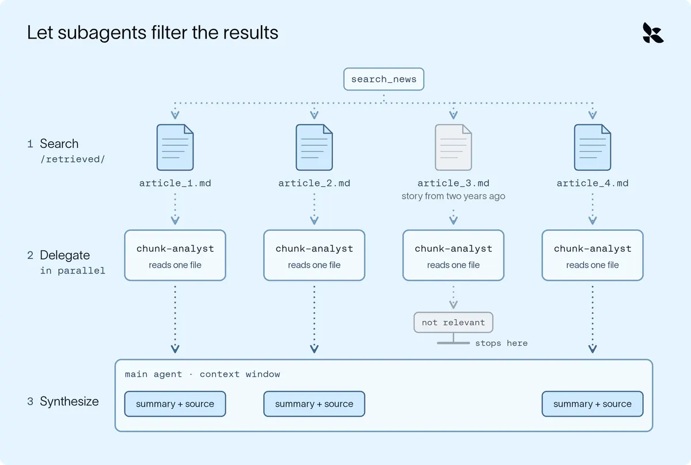
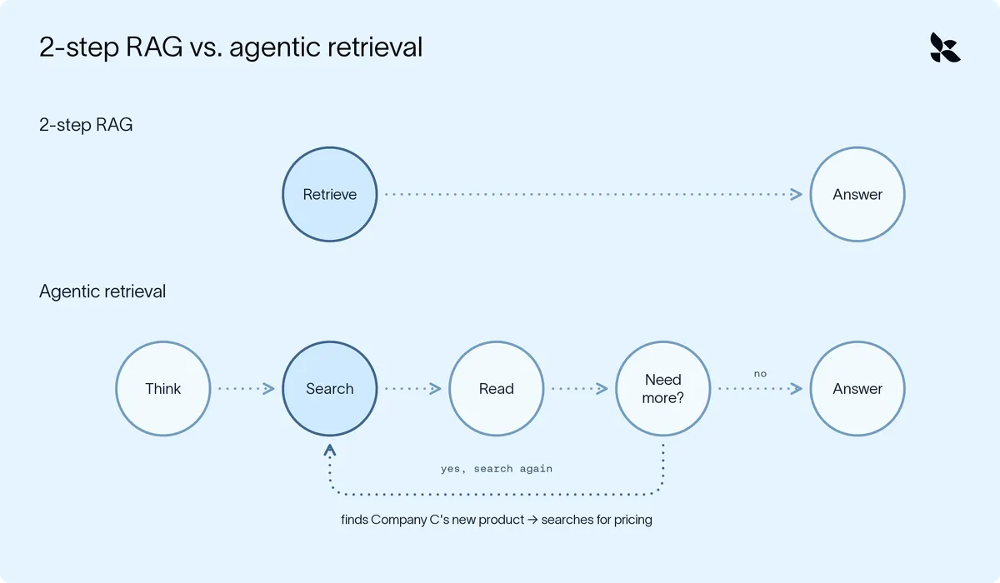

上下文工程從檢索開始：選對工具，少燒一次 context
導讀原文：LangChain Blog〈Context Engineering (Agent Memory) for AI Agents Starts with Retrieval〉——方法論文章，以 Deep Agents 的競爭分析 agent 貫穿舉例
檢索的目標不是查到最多，而是讓主代理只看到結論——原文三類失敗共用同一帖藥：把「讀」這件事往外丟（編輯綜整）。
三種失敗，同一筆帳
| 失敗類型 | 原文舉的症狀 | 代價 |
|---|---|---|
| 搜得笨 | 每份檔都打開看內容；來源用詞不同就反覆改寫查詢 | 每搜一次都付 token 與時間，還沒查到就先塞滿視窗 |
| 一次灌太多 | 為了一個數字載入整份 4 萬列匯出；檢索工具每次直接回 4 篇 | 視窗一步填滿，沒空間留給真正的工作 |
| 過時或無關 | 同名不同公司的報導、兩年前的舊聞 | 模型分不出真假，錯誤沿著後面每一步放大 |
→ 可橫向滑動

這張圖就是全文骨架。原文的競爭分析 agent 每週一跑，要研究上百家對手、產出一份套用團隊範本的報告。
它對每家對手只找三樣東西，但每樣都可能耗掉十幾次嘗試——光是「打開看裡面有什麼」就足以在動筆前燒光視窗。
原文按病灶分節（低效、過量、過時），每節再給對應工具；編輯整理成一句：先辨病，再選藥。
先查一次再回答，研究型代理不夠用
原文把「開場查一次、接著直接作答」這種配置標為 2-step RAG；它撐得起 FAQ bot，撐不起研究。
理由是中途才知道要查什麼：代理研究 Company C 時讀到一則沒聽過的新品發表，接著才需要該產品定價——開場它不可能知道要查這個。

Deep Agents 預設就是後者：代理跑在迴圈裡，任何工具可呼叫任意次。搜尋的 know-how 則可打包成 skill。
skill 平時只露名稱與簡短描述，任務需要才載入全文——原文稱此為 progressive disclosure，好處是冷門知識不必常駐佔位。
寫進 skill 的是 know-how：該查哪個索引、查詢怎麼措辭、引用格式怎麼排（原文未與 system prompt 對比，此為編輯推論）。
工具選型：先上最省的那個
| 情況 | 該用的工具／機制 | 原文怎麼說 |
|---|---|---|
| 知道檔名特徵 | glob | 依名稱樣式找檔，例 **/company-a*.md 找出上週筆記 |
| 知道關鍵字 | grep | 只比對字面文字；在檔內搜尋而不把整檔載進 context，可回檔案、行或計數 |
| 只知語意 | retrieval tool（向量庫） | 回最接近的匹配；也可架在 SQL、搜尋 API、MCP server 上，匹配方式跟著資料源變 |
| 檔案很大 | read_file | 一次讀一頁，預設 100 行；可設 offset（起點）與 limit（行數）跳讀 |
| 結果超大 | harness 卸載 | 超過約 2 萬 token 才觸發，存到 /large_tool_results/，只給路徑與首尾幾行預覽 |
→ 可橫向滑動
原文的判準很直白：知道字，grep 勝過 embedding 查詢；語意搜尋留給真的需要的那一次。省下的是 token 與時間，也少一次重試。
grep 的極限也很具體：搜「Company A funding」會漏掉標題寫「Company A closes $50M Series B」的那篇——這正是接上語意檢索的時機。
glob 與 grep 在每個 deep agent 都內建，與 ls、read_file、write_file、edit_file 並列；retrieval tool 則要自己加。
檔案放在 agent state、本機磁碟、持久儲存或沙箱都一樣能用，因為全都走 agent 的 backend。
自己寫檢索工具也照同一個道理：讓它把每筆結果寫成檔案、只回傳路徑。範例程式用 similarity_search 取 4 筆，主代理看到的只是四個短路徑。
兩條原文標明的邊界
一，過濾擋得掉無關，擋不掉過時。範例 agent 每週一跑，上個月的索引抓不到本週新聞——解法是接搜尋 API 或 MCP server，或在工具裡按日期過濾。
二，檢索回來的文字是資料，不是指令。原文明說沒有任何 prompt 或分隔符策略能完全防住注入，剩下的只有驗證：答案引用的來源是否如預期、說法是否對得上原文。
驗證的具體做法有兩步：確認引用的是預期來源，再逐句核對說法與被引用段落是否相符。
原文最後收成五條通用策略：用最有效的工具、分頁而不整載、回路徑不回內容、把讀的工作委派出去、驗證接地（grounding）。
（編輯觀點：原文稱這五條不分 harness 皆適用，但範例與工具全用 LangChain Deep Agents，讀來仍偏廠商方法論；換框架時這五條照樣成立。）
帶走三件事
讀的工作外包給子代理。無關內容進主視窗，會被當可信材料沿用。
每次檢索先問有沒有更省的工具。grep 夠用時，向量查詢是浪費。
回路徑，不回內容。讓代理自己決定讀哪幾行。
同一主題的其他館藏
導讀為本站編輯內容（AI 摘解自原文與館藏重點，非官方文件）；引述數據出自原文，圖解與小標為編輯整理。內容經對照原文的獨立事實審查後發布。